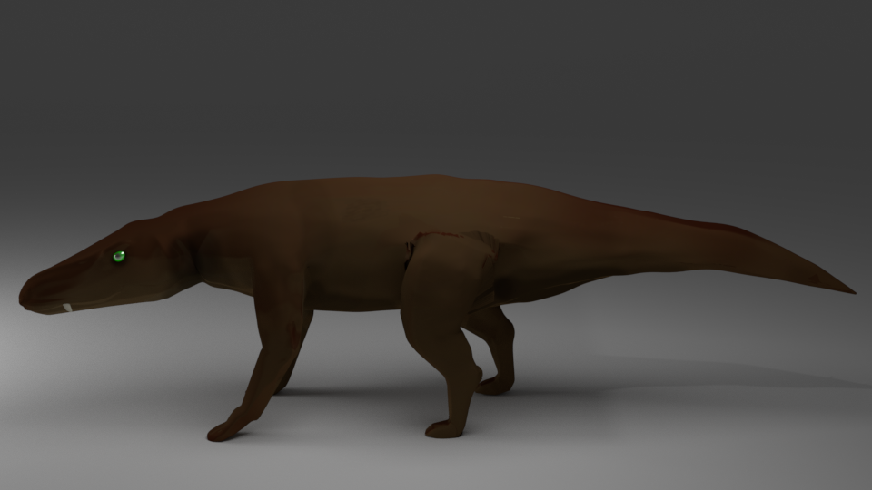

3D реконструкция возможного внешнего вида ксенокретозухи
Xenocretosuchus koloscovi
В 2006 году в Тээтэ были обнаружены зубы, не похожие на зубы динозавров. Только через два года выяснилось, что эти зубы принадлежат новому виду животных из семейства цинодонтов. Ранее неизвестный вид был назван в честь русского ученого Петра Николаевича. По мнению ученых этот вид был покрыт шерстью и возможно являлся млекопитающим.